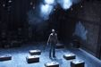

Quotes from Reviews
So Go the Ghosts of Mexico
LaMama
“Most Strikingly, the entire production is infused with an anxiety-inducing soundscape (by Elizabeth Rhodes), which alternates among paranormal radio music, the goose-pimply sounds of static and a dull, quickening heartbeat.”
- New York Times
Sweet Storm
Alchemy Theater Company
“Elizabeth Rhodes’s understated sound design offers textures like distant thunder, the faint din of a passing train and the quiet patter of rain, vividly evoking a sultry, breezy Florida evening on the verge of a tropical storm.”
- New York Times

White People
Starry Night Entertainment
“In perfect tandem with the performers are Elizabeth Rhodes’s gently artful sound design and Les Dickert’s evocative lighting.”
- New York Times

Dirty Story
LAByrinth Theater Company
“Elizabeth Rhodes’ sound design, with its wicked use of movie themes including Exodus, The Magnificent Seven, andYou Light Up My Life, is as effectively satirical as anything in the text.”
- Live Design
The Dirty Talk
Spare Change Productions
“Elizabeth Rhodes' sound design convincingly creates the howling tempest that locks these two men together and keeps them off-balance.”
- Curtian Up
Broad Channel
“Elizabeth Rhodes’ sound design shows her usual facility for selecting exactly the right pop tune to fill out a scene; she also contributes some realistic effects to a scene of breaking and entering.”
- Live Design
Washing Machine
Fist in the Pocket
“Elizabeth Rhodes' sound design sets the mood, mixing noises...with musical selections ranging from a subtle piano underscoring to the loud blasting of The Who's song, “Teenage Wasteland.”
- Theater Mania
Double Indemnity
The Old Globe
"Elizabeth Rhodes' excellent sound and Stephen Strawbridge's lighting add rich noir atmosphere."
- U-T San Diego
"The atmosphere comes alive with Stephen Strawbridge’s evocative and shadow engulfed lighting. Elizabeth Rhodes’ subtle and later punctuating sound design and Kwan-Fai-Lam’s original music completes theimagination’s picture."
- Examiner.com
"Keith Skretch’s projection design added to the film noir feel of the performance. From rain droplets to a smoke-filled office, these images ramped up the cold and eerie feeling imparted on the audience. Couple these aspects with Elizabeth Rhodes’s sound design and Kwan-Fai Lam’s original music, this is one for the techies."
- Edge San Diego
"One particularly clever touch has actors light their cigarettes without a flame, yet their smoke floats up above their heads (the tiny click of the metal lighters is one of the many terrific touches by sound designer Elizabeth Rhodes)."
- StageAndCinema.com
In the Heat of the Night
Godlight
"Tantalo's staging is masterful: nary a prop is used, yet the locales of each of the many scenes are clear and distinct, thanks in large part to Evans's evocative lighting and Elizabeth Rhodes's equally adept sound design."
- NYTheater.com
"The show is helped tremendously by the powerful lighting and set design by Maruti Evans (the latter which includes an ominous noose hanging from the ceiling) and sound design by Elizabeth Rhodes."
- The Epoch Times
Awards
Drama Desk Nomination
In the Heat of the Night
Winner Best Design NYMF Awards
Boy in the Bathroom
People of the Year 2009
Presented by nytheater.com
“Sound designer Elizabeth Rhodes scored three successes in a row this year: Sweet Storm from the Alchemy Theatre, Diverse City Theatre Company’s Race Music, and most recently, Women’s Project’s hit play about Aphra Behn, Or,.”
- live design